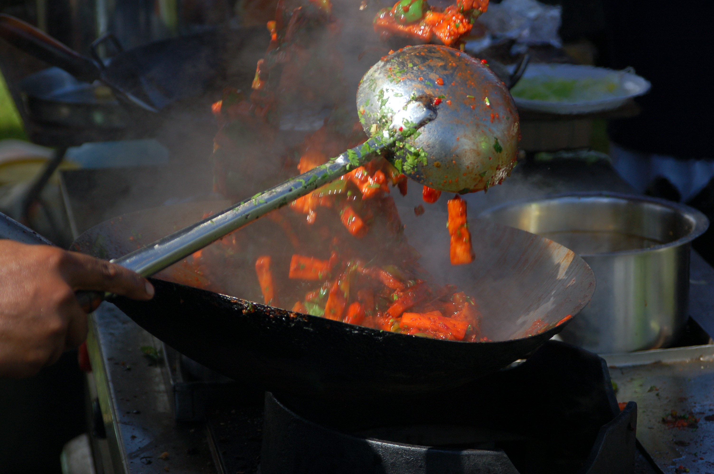
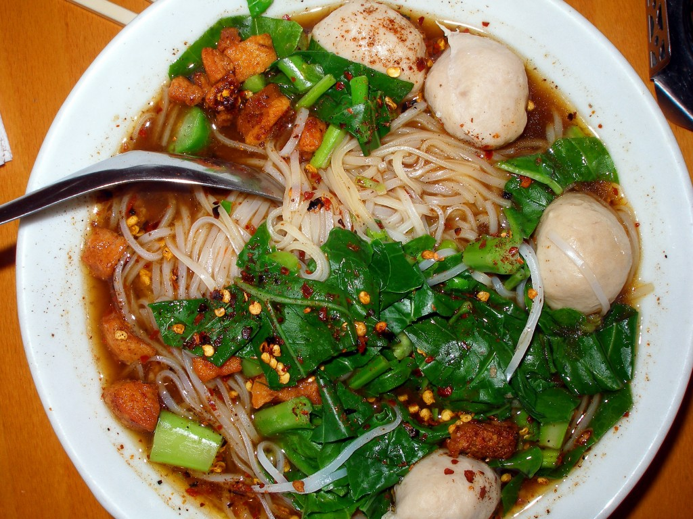
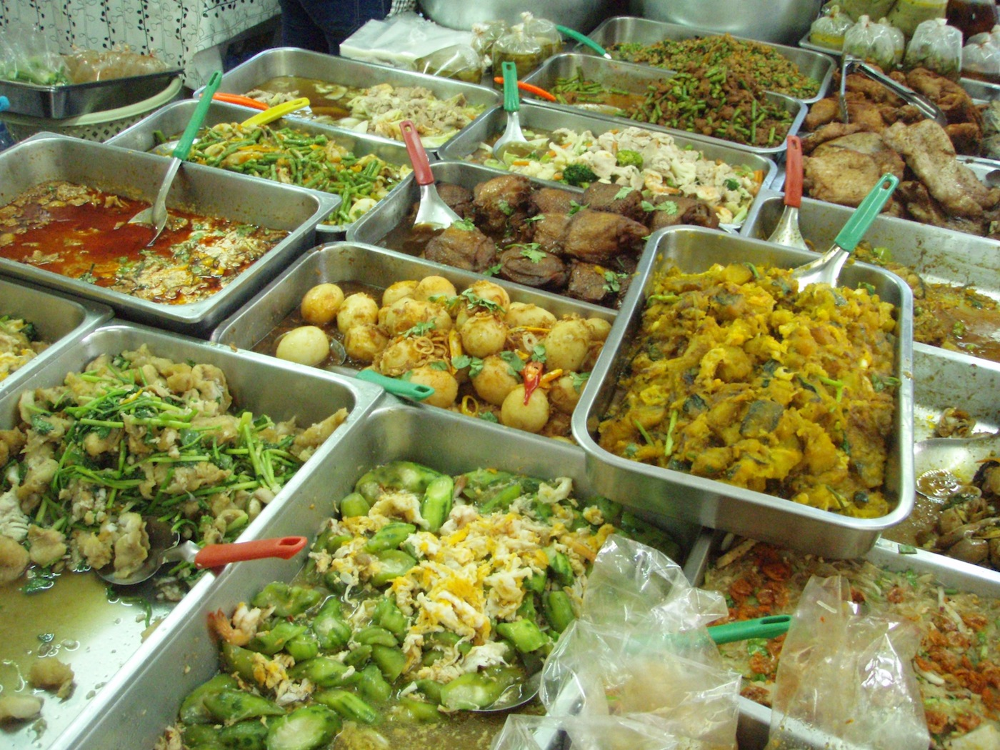
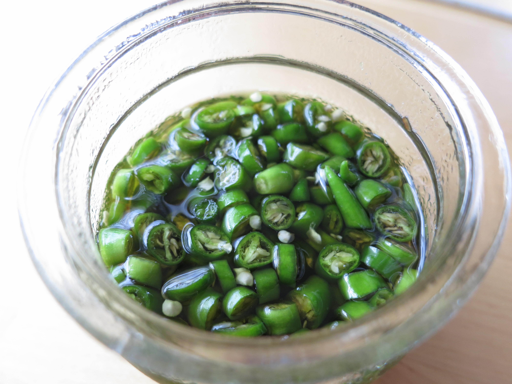
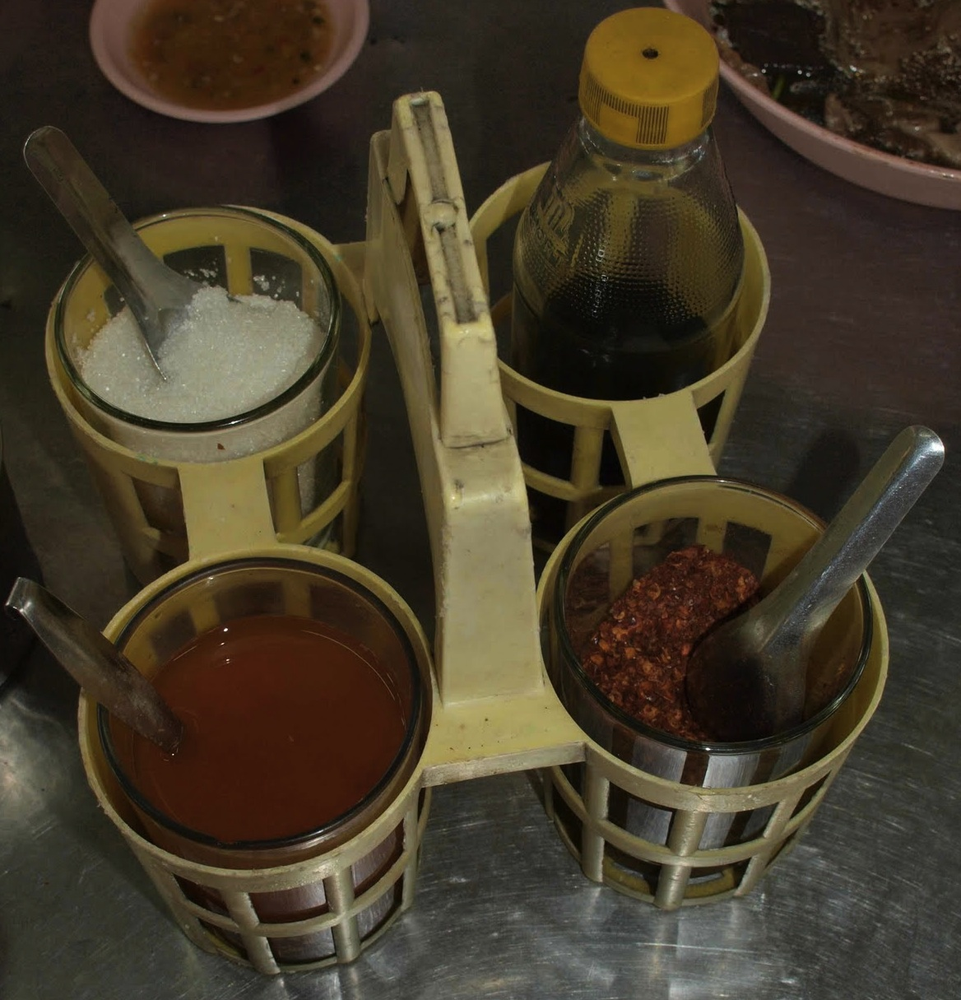

Тайская кухня - как едят в Таиланде

Тайская кухня - одна из причин приехать в Таиланд. Здесь можно найти много разнообразной вкусной еды за приемлемый бюджет. В зависимости от того, ешь ты один или в большой компании, в каком регионе страны ты находишься и от твоих вкусовых предпочтений, ты можешь есть разными стилями и способами.
Тайские блюда бывают коллективные и индивидуальные. И те и другие едят с рисом. Есть также большое количество супов с лапшой.
Коллективные блюда
Коллективные блюда едят компанией из нескольких человек. На стол подают несколько блюд, каждое на своей тарелке, которые участники трапезы делят друг с другом (едят из одной тарелки). При этом у каждого участника своя тарелка с рисом.
Индивидуальные блюда
Индивидуальные блюда подаются на одной тарелке вместе с рисом. Если едят несколько человек, каждый ест из своей тарелки.
Еда в стиле Исан ()
Исан - большой регион на северо-востоке Таиланда, живущий сельским хозяйством. Гранича с Камбоджей и Лаосом, Исан испытывает большое влияние этих стран. Еда в стиле Исан - это коллективные блюда с клейким рисом. Клейкий рис не едят из тарелки, его едят руками из специальной бамбуковой корзинки. Едок скатывает из риса шарик и макает его в соус, или подцепляет кусок из общей тарелки с блюдом. Эта традиция, вероятно, пришла из Лаоса, где клейкий рис - основная пища. Блюда очень острые, многие приготовлены в виде салатов, которые удобно есть руками, с острым рыбным соусом, чтобы было куда макать рис.

Блюда с обычным рисом ()
Это широкий спектр жареных блюд, приготовленных в воке, коллективных или индивидуальных, которые подаются с обычным рисом. Вок - это большая глубокая сковорода с маленьким дном. Едят такие блюда ложкой и вилкой. Тайский стиль использования ложки с вилкой не совсем обычен. Основной инструмент - ложка, ей еду зачерпывают и несут в рот. Вилка нужна для того чтобы помогать нагребать еду в ложку.

Лапша ()
Лапша это как правило отдельное блюдо, жаренная или в виде супа. Лапшу едят китайскими палочками, а суп еще и суповой ложкой.

Макашницы и street food
Макашница - слово туманного происхождения, которым у русских принято называть передвижные пункты питания, распространенные в Таиланде. В английском есть термин Street Food, который примерно о том же. Еду в любом городе Таиланда можно найти прямо на улице. Ее тут готовят и тут же едят. Не стоит пренебрегать уличной едой, так как это самый вкусный, дешевый и совершенно безопасный способ поесть.

Соль и приправы
Соль в Таиланде почти не используют, вместо соли используют соленый соевый соус () или рыбный соус c острым перцем чили (), тоже очень соленый и острый.
Рыбный соус к рису (пользуйся очень осторожно, не больше чайной ложки)

В любом месте где подают супы с лапшой, на столах ты найдешь четыре приправы как на картинке ниже. По часовой стрелке:
- сахар ()
- рыбный соус ()
- молотый перец чили ()
- уксус с перцем чили ()
